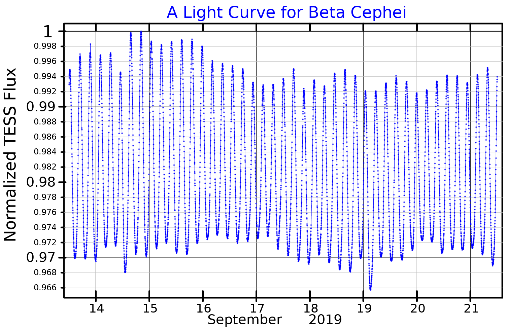

Beta Cephei stars (also known in older literature as Beta Canis Majoris stars) are hot, massive B-type stars that exhibit small, rapid brightness variations due to radial and non-radial pulsations of their surfaces. They occupy the upper main sequence and subgiant region of the Hertzsprung–Russell diagram, with spectral types predominantly B0–B3, masses of 7–20 M⊙, and effective temperatures of roughly 20,000–30,000 K. Despite luminosities of 2,800 to 71,000 times that of the Sun, their brightness variations are subtle: typically 0.01–0.3 magnitudes in visible light, though variations may reach 1 magnitude in ultraviolet wavelengths. Beta Cephei variables must not be confused with Cepheid variable stars, which are luminous yellow supergiants used as distance indicators driven by a wholly different physical mechanism.

PopePompus / Wikimedia Commons (CC BY-SA 4.0)
{kind=link}
Discovery and History
The variability of the prototype star, Beta Cephei (Alfirk), was first revealed through radial velocity measurements by American astronomer Edwin Brant Frost in 1902. Photometric brightness variations were first detected by Paul Guthnick in 1913. Extensive research by Otto Struve in the 1950s established the physical nature of the class. By 1993 Sterken and Jerzykiewicz had catalogued 59 confirmed members; the definitive 2005 catalog by Stankov and Handler listed 93 confirmed Beta Cephei stars. Modern space photometry from TESS and Gaia has substantially expanded the census: a 2024 study identified 155 confirmed or candidate Beta Cephei stars, of which 83 were confirmed for the first time.
The Prototype: Beta Cephei
Beta Cephei (Alfirk, β Cep) is a B1 IV blue subgiant located approximately 690 light-years away in the constellation Cepheus. It has a mass of approximately 7 M⊙, a radius of approximately 7.2 R⊙, an effective temperature of 23,600 K, and a luminosity of approximately 20,000 L⊙. Its visual magnitude ranges from +3.16 to +3.27 with a dominant pulsation period of 4 hours 34 minutes.
Pulsation Characteristics
Beta Cephei variables pulsate with dominant periods of 0.1–0.3 days (roughly 2.4–7.2 hours). Most are multiperiodic: they simultaneously excite several pulsation modes with slightly different frequencies, producing a beating pattern in the light curve. A subclass designated BCEPS (short-period Beta Cephei stars) has periods under 1 hour, with spectral types B2–B3 IV–V.
Beta Cephei variables pulsate predominantly in low-order pressure modes (p-modes), which are acoustic standing waves where pressure acts as the restoring force, involving radial or non-radial expansion and contraction of the stellar outer layers on timescales of hours. Some Beta Cephei stars also show gravity modes (g-modes), where buoyancy acts as the restoring force and which propagate deeper into the stellar interior. Stars that show both p-mode and g-mode pulsations simultaneously are scientifically valuable hybrid pulsators. Stars that show pure g-mode pulsations with periods of 0.5–5 days in slightly cooler B stars form the related class of Slowly Pulsating B stars (SPB stars), which occupy a cooler, overlapping region of the HR diagram.
The Driving Mechanism: Iron Opacity Bump
The pulsations of Beta Cephei variables are driven by the kappa (κ) mechanism acting in the ionisation zone of iron-group elements deep in the stellar interior, at a temperature of approximately 200,000 K. At this depth, iron atoms are partially ionised in a state where their opacity increases upon compression — the opposite of the usual behaviour. This ‘Z-bump’ or ‘Fe-bump’ traps outward-flowing radiation and builds up pressure in the layer, creating a heat-engine cycle that sustains pulsation on timescales of hours. Theoretical predictions of this mechanism were confirmed following improvements to stellar opacity calculations (the OPAL and OP opacity projects) in the 1990s. This mechanism differs fundamentally from the helium ionisation zone that drives classical Cepheids and RR Lyrae stars.
Notable Examples
Several of the brightest stars in the night sky are Beta Cephei variables. Spica (α Virginis, magnitude 0.97) is a binary system whose primary is a Beta Cephei variable with an effective temperature of approximately 25,300 K. Hadar (β Centauri, magnitude 0.61) is the 11th brightest star in the sky and a triple system with at least two Beta Cephei components. Mimosa (β Crucis, in Crux) is more than 3,000 times more luminous than the Sun and in 2021 became the first star of any type to have its pulsation modes identified via polarimetric asteroseismology. Shaula (λ Scorpii) and Beta Canis Majoris (with three known pulsation periods of 6.03, 6.00, and 4.74 hours) are further well-studied members.
Asteroseismology
Because Beta Cephei stars pulsate in both p-modes and g-modes, they allow asteroseismology to probe stellar structure at multiple depths simultaneously. This diagnostic capability provides constraints on convective core size and overshooting, internal rotation profiles (including differential rotation between the core and envelope), and chemical stratification. Core-to-surface rotation rates have been determined in at least four Beta Cephei stars through asteroseismic modelling. A 2025 ensemble analysis of 119 Beta Cephei stars using Gaia and TESS data found most had a dominant dipole non-radial mode, with mass-normalised convective core masses between 0.2 and 0.3. Beta Cephei stars occupy the Beta Cephei instability strip, a near-vertical band in the upper portion of the HR diagram where the iron opacity bump can sustain pulsation in B-type main-sequence and subgiant stars.